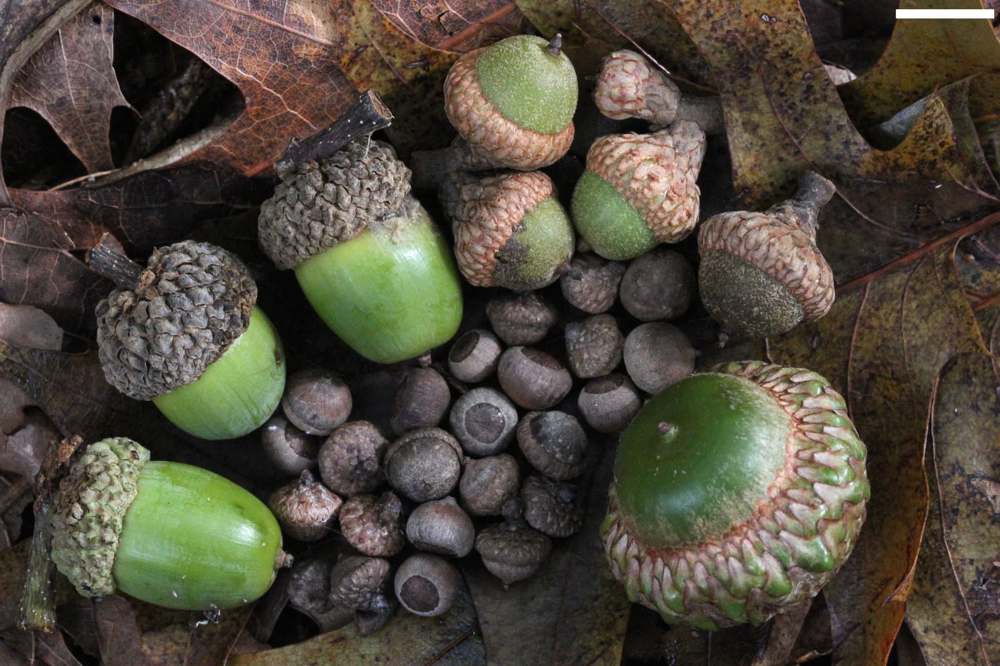
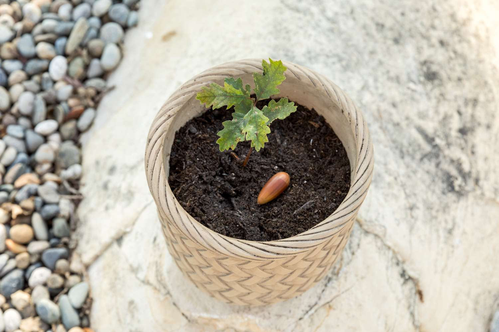
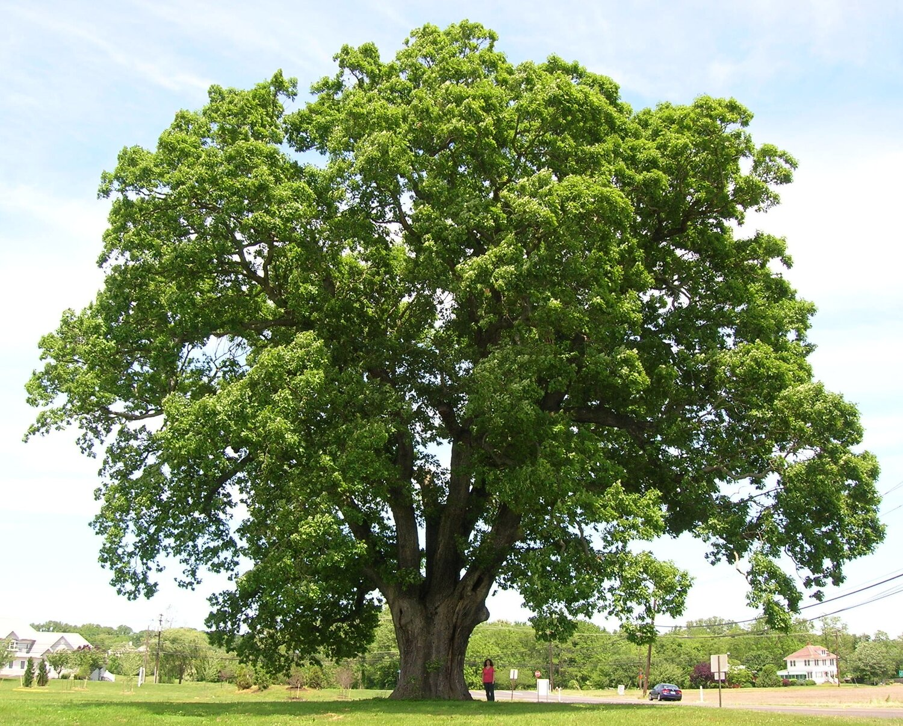

flowchart LR
A[Sunlight] --> C{Photosynthesis, Chlorophyll}
D[Carbon dioxide 6CO2] --> C
W[Water 6H20] --> C
C --> B[Sugar C6H12O6 + Oxygen 6O2]
Lecture 3: Forest Ecosystems (Last update: 22 April 2025)
The development of a single tree progresses from



The stories of forests assemble from the stories of the life cycles of individual trees, along with the stories of understory vegetation, animals, and microbes.
Forest
Chemical reactions can be viewed as the flow of energy and electrons. In exothermic reactions electron moves to lower energy products while in endothermic reactions electrons move to higher energy compounds.
A redox reaction, short for reduction–oxidation reaction, is a type of chemical reaction that involves the transfer of electrons between two substances
\[ Zn(s)+Cu^{2+}(aq)\rightarrow Zn^{2+}(aq)+Cu(s) \]
Reducing agent
The substance that loses electrons is called the reducing agent, because it will promote the reduction of other substance.
Oxidizing agent
The substance that gains electron is called the oxidizing agent, because it will promote the oxidation of other substance.
Photosynthesis
The cornerstone of biological energy in plants is photosynthesis, a biochemical process that occurs in the chloroplasts of plant cells, particularly in the leaves. During photosynthesis, plants capture light energy from the sun and convert it into chemical energy stored in glucose and other organic molecules.
flowchart LR
A[Sunlight] --> C{Photosynthesis, Chlorophyll}
D[Carbon dioxide 6CO2] --> C
W[Water 6H20] --> C
C --> B[Sugar C6H12O6 + Oxygen 6O2]
The products of photosynthesis contain only carbon, oxygen and hydrogen. The mass of these three elements accounts for more than 90% of the dry mass of trees and other plants.
Plant growth depends on photosynthesis, but not necessarily on the recent photosynthesis.
Growth of plant
Growth refers to the irreversible increase in size, mass, and volume of a tree, involving both cell division (mitosis) and cell enlargement, and ultimately the formation of new tissues (e.g., roots, leaves, stems, xylem, phloem).
Respiration
Respiration in trees refers to a metabolic process in which organic compounds (mainly glucose) are broken down to release energy in the form of adenosine triphosphate (ATP). This process occurs in all living cells of the tree (leaves, stems, roots).
\(C6H12O6+6O2 \rightarrow 6CO2+6H2O+energy (ATP)\)
Plants use stored carbohydrates and nutrients to grow new leaves. It takes leaves about a week or two of photosynthesis to recover the cost of growing them, and then leaves support the plant.
Leaf morphology is a result of the interaction between genetic and environmental factors.
The light passing through the canopy of a forest may amount to only 5% or less of the light that strikes the top of the canopy.
Kyoto University | Sustainable Forest Environment (SFE)